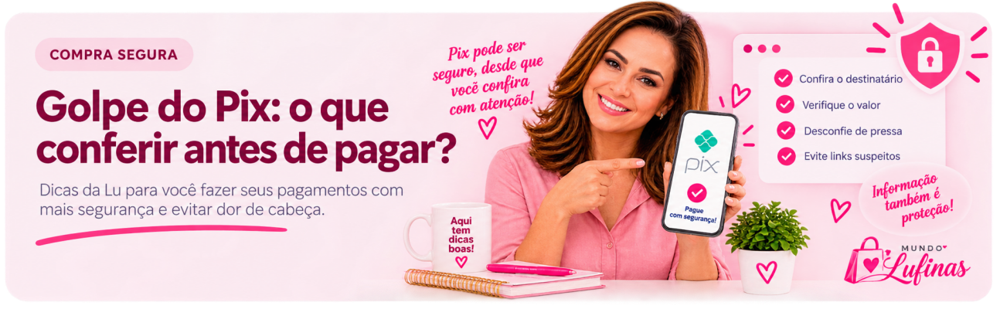

Você escolhe o produto, chega ao pagamento, abre o aplicativo do banco, lê o QR Code e pronto.
Parece uma operação automática.
Mas existe uma etapa que não deveria virar automática: conferir para onde o dinheiro está indo.
O Pix é um meio de pagamento rápido e seguro, mas golpistas podem usar sites falsos, mensagens, QR Codes e outras estratégias para convencer a vítima a enviar dinheiro para a conta errada.
Por isso, antes de confirmar, alguns segundos de atenção podem fazer muita diferença.
1. Confira quem vai receber
Essa é a regra mais importante.
Depois de informar uma chave, ler um QR Code ou usar o Pix Copia e Cola, pare na tela de confirmação do seu banco.
Confira o nome do beneficiário antes de autorizar.
Em uma compra, veja se as informações apresentadas fazem sentido em relação à loja ou ao intermediador de pagamento utilizado por ela.
Se aparecer uma pessoa ou empresa que você não reconhece, não confirme até esclarecer.
2. Confira também o valor
Pode parecer óbvio, mas a pressa faz a gente enxergar aquilo que espera encontrar.
Antes de pagar, confira novamente:
beneficiário + valor
Se qualquer uma dessas informações estiver diferente do esperado, interrompa a operação.
Não tenha vergonha de voltar uma tela, fechar a página ou começar novamente.
3. QR Code e Pix Copia e Cola também precisam ser conferidos
Um QR Code não deve ser considerado seguro simplesmente porque apareceu dentro de uma página bonita.
Em setembro de 2026, pesquisadores divulgaram uma fraude em lojas virtuais na qual um código malicioso podia substituir o QR Code legítimo do Pix por outro controlado por criminosos. O mesmo tipo de ataque também podia alterar o código Pix Copia e Cola.
A Kaspersky informou ter identificado dezenas de lojas online brasileiras afetadas pela campanha.
Não confie somente no QR Code. Confira também as informações que o seu banco mostra antes do pagamento.
4. Desconfie da urgência
“Pague agora.” “Últimos minutos.” “Faça o Pix imediatamente para não perder o pedido.” “Seu produto está retido e precisa pagar uma taxa.”
A urgência é uma ferramenta muito usada em golpes porque tenta impedir que a pessoa tenha tempo para pensar.
Quando alguém estiver tentando fazer você pagar antes que consiga conferir, faça justamente o contrário: pare e confira.
5. Não saia da plataforma para pagar sem entender o motivo
Você está comprando dentro de uma plataforma conhecida e, de repente, recebe uma mensagem:
“Faça o Pix diretamente para esta chave que consigo um desconto melhor.”
Isso merece atenção.
Se a negociação começou dentro de uma plataforma, prefira utilizar os meios de pagamento e os canais previstos por ela.
Um desconto não compensa perder as proteções e os registros oferecidos pelo ambiente em que a compra estava sendo realizada.
6. Não confie apenas em comprovantes recebidos
Existe outro golpe envolvendo Pix que funciona ao contrário: alguém afirma ter enviado dinheiro para você e pede uma “devolução”.
Nessa situação, confira primeiro o extrato da sua própria conta.
Se o Pix realmente entrou e for necessário devolvê-lo, utilize a funcionalidade de devolução da própria transação, que envia o valor de volta à conta de origem.
Comprovante não substitui extrato bancário.
7. Se alguma coisa parecer errada, não confirme
Você não reconheceu o beneficiário?
O valor mudou? A chave chegou por uma mensagem estranha? A pessoa está pressionando? A página abriu de uma maneira diferente?
Não pague enquanto não entender o que aconteceu.
O Pix é rápido. Você não precisa ser.
Antes de pagar, faça o teste da Lu 💕
Passe por estes pontos antes de confirmar:
Se uma dessas etapas não fizer sentido, pare. Alguns segundos de conferência podem evitar horas — ou dias — tentando resolver um problema depois.
E se eu perceber o golpe depois de fazer o Pix?
Aja rápido.
O Banco Central orienta a vítima de fraude ou golpe a contestar a transação junto à sua instituição financeira para que seja analisada a possibilidade de acionamento do Mecanismo Especial de Devolução (MED).
O pedido pode ser feito em até 80 dias a partir da transação, mas agir o quanto antes é importante.
O MED não garante a devolução do dinheiro. A recuperação depende da análise do caso e da existência de recursos que possam ser bloqueados e devolvidos.
Também é recomendável registrar Boletim de Ocorrência.
O MED é destinado a situações de fraude, golpe ou crime. Ele não funciona como simples cancelamento de compra e não se aplica a mero desacordo comercial.
💕 Dica da Lu
Pix é uma facilidade maravilhosa — eu também uso.
Mas justamente porque ele é tão rápido, criei um hábito simples: antes de apertar “Confirmar”, eu olho mais uma vez.
Nome de quem recebe. Valor. E se aquele pagamento realmente corresponde ao que estou fazendo.
Não importa se estou com pressa.
Porque alguns segundos conferindo antes valem muito mais do que tentar recuperar o dinheiro depois.
Comprar melhor também é pagar com atenção.
Mundo LuFiNas — a gente pesquisa, você economiza!
Fontes e ferramentas úteis
Banco Central — Segurança no Pix — orientações de prevenção e segurança para usuários do Pix.
Banco Central — orientações para vítimas de golpe com Pix — informações sobre contestação e providências após a fraude.
Banco Central — Mecanismo Especial de Devolução (MED) — funcionamento, prazo e limites do mecanismo.
Receita Federal — cuidados com compras em sites falsos — alertas sobre falsas cobranças, páginas fraudulentas e pagamentos.
Kaspersky — alerta sobre fraude em checkout com Pix — pesquisa divulgada em setembro de 2026 sobre adulteração de QR Code e Pix Copia e Cola em lojas virtuais.
As formas de golpe e os procedimentos das instituições podem mudar. Em caso de dúvida ou fraude, confirme as orientações nos canais oficiais do seu banco e do Banco Central.